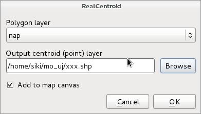
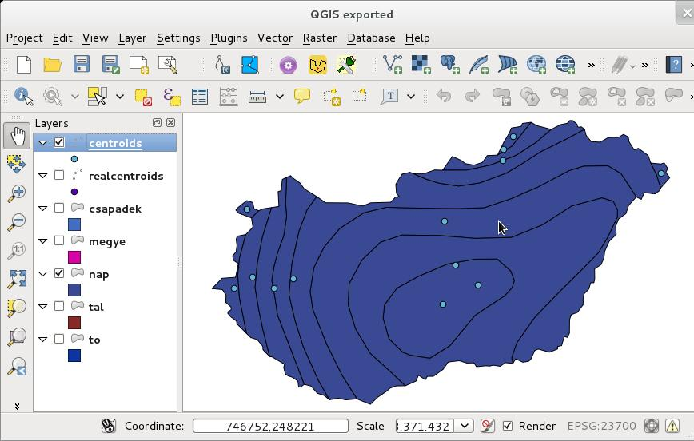
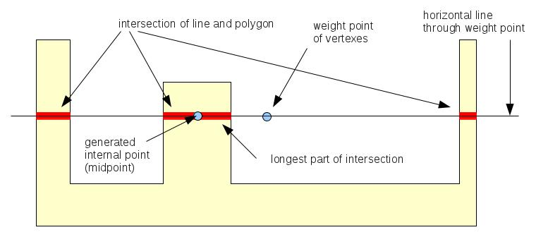

Unzip the downloaded realcentroids.zip into your plugins directory, e.g. ~/.qgis2/python/plugins/.
Enable the plugin in the Plugins/Manage and Install Plugins ... dialog. Open the polygon layer you want to create centroids. Start the plugin clicking on the icon in the plugins toolbar or select it from the plugins menu. The following dialog appears

In
the Polygon layer list you can select one from the loaded
polygon layers. Select a new shapefile clicking on the Browse
button. If you select an existing shapefile, you get a warning
weather to overwrite that shape. If you check Add to map canvas
the point shape with the internal points is added to the current
project. The attributes of the polygons are also copied to the target
point shape file.
Why do we need such plugin? There is a Polygon centroids option in the Vector/Geometry Tools menu. Polygon centroids will create centroids at the weight point of the vertexes of the polygon. So it can be outside the polygon in a concave or multipart case. Realcentroid will place the point always inside the polygon. See figures below to compare the results of the two methods.

Centroids
(weight points) created by Vector/Geometry Tools/Polygon centroids

Internal
points generated by RealCentroids plugin
For each polygons the weight point is generated first. If the weight point is outside, the intersection of the horizontal line through the weight point and the polygon is generated. The midpoint of the longest line segment from the intersection result will be used. See the figure below.

Internal
point generation
Thanks to Seal Phone and Jukka Rahkonen giving advice to improve the plugin.